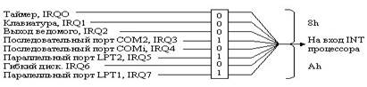

электронный ресурс по учебной дисциплине 1-40 05 01-09 "Информационные системы и технологии (в обеспечении промышленной безопасности)"
|
||
| Оглавление | Программа | Теория | Практика| Контроль знаний | Об авторах | ||
Тема 6
Взаимодействие с аппаратурой
Программирование аппаратуры – как штатных
периферийных устройств компьютера, таких, как видеосистема, клавиатура,
последовательный или параллельный интерфейс и др., так и нестандартных
измерительных или управляющих устройств, подключаемых к компьютеру, если он
используется для автоматизации научных исследований или управления
технологическим процессом – является одним из важнейших и наиболее оправданных
применения языка ассемблера. Во-первых, от программ управления аппаратурой
часто требуется максимальное быстродействие. Во-вторых, эти программы,
призванные управлять аппаратурой на низком уровне, путем обращения к регистрам
и их отдельными битам, часто ничего не выигрывают от использования языков
высокого уровня, в которых те же операции реализуются с помощью процедур языка,
менее наглядных и эффективных, чем "чистые" команды процессора. В-третьих, при программировании
аппаратуры, особенно, экспериментальной, важно жестко соблюдать временную и
событийную последовательность команд и сигналов, воспринимаемых программируемым
устройством, что естественным образом достигается при использовании языка
ассемблера, в котором каждое предложение языка реализуется вполне определенной
командой процессора.
В зависимости от назначения и способа
функционирования аппаратуры, она может требовать различных режимов программного
управления. В основном существуют три режима, или способа взаимодействия
программы и аппаратуры: режим свободного доступа, режим ожидания готовности и
режим прерываний.
Режим свободного доступа
Режим свободного доступа используется в
тех случаях, когда момент обращения к устройству целиком определяется
программой. Например, регистры, управляющие работой аппаратуры, обычно доступны
в любой момент времени. Программа может в любой момент прочитать содержимое
этих регистров и определить по нему текущий режим работы устройства, или,
наоборот, послать в управляющие регистры требуемую последовательность команд с
целью изменения рабочего режима.
Режим ожидания готовности необходимо
использовать в тех случаях, когда после приема некоторой команды устройству
требуется определенное время для ее выполнения. Например, в последовательный
порт, через который компьютер связывается с другими компьютерами или телефон
ной сетью, нельзя посылать следующую порцию информации (байт), пока
устройствами последовательного интерфейса не будет отправлена в канат связи
предыдущая порция. Режимом ожидания готовности часто пользуются для приема
информации из измерительной аппаратуры, если требуется обеспечить максимальную
скорость ее получения.
Режим прерываний является важнейшим
способом связи с относительно медленным периферийным оборудованием. В этом
случае устройство подключается не только к линиям адресов, данных и управления
системной магистрали компьютера, но и к одной из специально выделенных линий
прерываний. В режиме прерывания устройство само решает, когда ему требуется
обслуживание, и посылкой в компьютер сигнала прерывания оповещает об этом
процессор. Типичным примером является клавиатура, посылающая сигнал прерывания
каждый раз, когда пользователь нажимает на ту или иную клавишу. Большая часть
штатных устройств компьютера – мышь,
диски, таймер и др. – используют режим
прерываний. Типичен этот режим также и для связи с измерительной аппаратурой в
тех случаях, когда аппаратура регистрирует относительно редкие события, или
измерительные данные накапливаются в аппаратуре в течение заметного времени и
затем пересылаются в компьютер сразу целой пачкой.
Cвязь
с аппаратными средствами самого компьютера, а также с подключаемыми к нему
устройствами осуществляется главным образом через адресное пространство
ввода-вывода. Это значит, что за каждым устройством закрепляется один или,
чаще, несколько портов, и программирование устройства осуществляется
исключительно с помощью команд in и out (а также ins и cuts, если
программируемое устройство может посылать данные потоком).
В простейшем случае программирование
устройства сводится к выполнению единственной команды in
в случае чтения из устройства, или out в случае записи в
него. Рассмотрим, например, процедуры маскирования и размаскирования аппаратных
прерываний. В каждом из двух контроллеров прерываний, включаемых в состав
компьютера, имеется регистр маски (рис. 6.1). Значение 0 в бите маски разрешает
прохождение сигнала прерывания, значение 1 запрещает. Пройдя через маску и
через последующие узлы контроллера прерываний (не показанные на рис. 6.1),
сигнал прерываний поступает на вход INT микропроцессора.
Программирование регистров маски осуществляется через порт 21h для ведущего контроллера и A1h для ведомого.
Исходное значение маски устанавливается
программами начальной загрузки компьютера в зависимости от конфигурации
вычислительной системы. Типичным является значение A8h, показанное на рис. 6.1. При этом значении маски
размаскированными оказываются системный таймер, клавиатура, мышь, подключенная
к первому последовательному порту.

Рисунок
6.1. – Регистр маски ведущего контроллера прерываний
СОМ1, гибкий диск, а также выход от
ведомого контроллера, подключаемый ко входу IRQ2 ведущего. Замаскированы оба
параллельного порта (принтер, подключаемый к порту LPT1, обычно не использует
прерываний, а второй параллельный порт часто просто отсутствует) и второй
последовательный порт, к которому ничего не подключено. Другими словами,
размаскировано все нужное, и замаскировано все ненужное.
В раде случаев возникает необходимость
замаскировать прерывания от системного таймера, который является единственным
постоянно активным источником прерываний. Такая ситуация типична, в частности,
для автоматизированных измерительных систем, в которых недопустимо прерывать
поток данных, поступающих от измерительной установки в компьютер. Любое
прерывание процесса приема данных может привесит к потере части принимаемой
информации и нарушению работы установки. Для запрета прерываний от таймера надо
выполнить такую последовательность команд:
in AL,21h ;Чтение регистра маски
or AL,1 ;Установка 1 в бите 0
out 21h,AL ;Запись нового значения маски
Восстановление исходного состояния
вычислительной системы с разрешенными прерываниями от таймера осуществляется
следующим образом:
in AL,21h ;Чтение регистра маски
and AL, 0FEh ;Установка 0 в бите 0
out 21h,AL ;Запись нового значения маски
Другим примером использования режима
свободного доступа к устройству является программирование энергонезависимой
КМОП-микросхемы, включающей в себя часы реального времени. Общий объем
КМОП-памяти составляет 64 байт (от 00h до 3Fh); доступ к байтам КМОП-памяти
осуществляется через порты 70h и 71h.
В КМОП-микросхеме реализован способ
обращения к ее отдельным ячейкам, широко используемый в микропроцессорной
технике. Если программировать КМОП-память прямым образом, для обращения к ее 64
ячейкам в адресном пространстве ввода-вывода пришлось бы выделить 64 адреса.
Для сокращения числа используемых адресов в состав микросхемы введены два
служебных регистра - адресный и данных. В адресный регистр (порт 70h) заносится
номер той ячейки КМОП-памяти, к которой требуется обращение. После этого чтение
регистра данных (порт 7 Hi) позволяет прочитать содержимое выбранной ячейки, а
запись в регистр данных выполняет передачу данного в эту ячейку. Приведем
полный текст программы, которая читает содержимое ячейки с номером 0Dh. В ней
хранится состояние батареи, питающей КМОП-микросхему. Если бит 7 этой ячейки
установлен, батарея исправна; если этот бит сброшен, напряжение батареи упало
ниже допустимого предела, и ее надо менять.
Пример. Чтение ячейки КМОП-микросхемы
code segment
assume cs:code
main proc
mov AL,ODh ;Будем читать ячейку ODh
out 70h,AL ;Задание номера ячейки
in AL,71h ;чтение из ячейки
test AL,80h ;Проверка бита 7
jnz ok ;Бит 7 = 1, перейти на OK
mov AH,02h ;Бит 7=0, питания нет
mov DL,'-' ; Выведем в знак этого
int 21h ; Символ минус
jmp exit ;Переход на завершение
ok: mov АН,02h ;Батарея в порядке,
mov DL,'+' ;выведем в знак этого
int 21h ;символ плюс
Завершим программу
exit: mov AX,4COOh
int 21h
main endp
code ends
end main
Режим ожидания готовности
Рассмотрим теперь программирование
периферийного оборудования в режиме ожидания готовности на примере
параллельного интерфейса. В стандартной конфигурации компьютера к параллельному
интерфейсу обычно подключается принтер, однако его можно использовать и для
связи с нестандартным (измерительным или управляющим) оборудованием.
В компьютерах используется разновидность
параллельного интерфейса под названием Centronics, отличающаяся относительно
высокой скоростью передачи данных (до 150 Кбайт/с) и простотой
программирования. Правда, Centronics позволяет передавать данные только в одном
направлении - из компьютера в устройство, однако эту проблему можно частично
решить, если воспользоваться для приема данных линиями состояния интерфейса.
Разумеется, в установке, подключаемой к
компьютеру через параллельный интерфейс, должно быть предусмотрено устройство
сопряжения, воспринимающее и вырабатывающее сигналы обмена с интерфейсом.
Интерфейс Centronics подключается к
периферийному устройству (принтеру) с помощью кабеля, содержащего 17 сигнальных
линий и несколько линий нуля. Управление интерфейсом осуществляется через три
закрепленных за ним порта: порта данных с адресом 378h, порта состояния
принтера с адресом 379h и порта управления принтером с адресом 37Аh. Порты
фактически представляют собой 8-разрядные регистры, биты которых соответствуют
сигналам интерфейса. Некоторые из этих сигналов, конкретно, сигналы портов
данных и управления, являются для интерфейса выходными; их должна устанавливать
программа, управляющая передачей информации. Другие сигналы, наоборот,
поступают из периферийного устройства и отображаются в состоянии закрепленных
за ними битов порта состояния; программа должна читать и анализировать эти
биты. На рис. 6.2–6.4
показаны порты интерфейса Centronics с указанием сигналов, соответствующим конкретным
битам.
Рисунок
6.2. – 378h порт данных интерфейса Centronics
Рисунок
6.3. – 379h порт состояния интерфейса Centronics
Рисунок
6.4. – 37Ah порт управления
Рисунок
6.5. – Протокол передачи данных для интерфейса Centronics
Сигнал BUSY считается активным, когда он
имеет высокое значение. В противоположность этому активное состояние сигналов
STROBE' и АСК' низкое, отчего они и обозначаются с тем или иным дополнительным
значком (с чертой наверху, со знаком минус или с апострофом, как у нас). Прослеживая
соответствие сигналов интерфейса состоянию битов его портов, необходимо иметь в
виду, что для некоторых сигналов (SLCT, РЕ, STROBE) в порты записываются их
прямые значения, а для других (ERROR, АСК, BUSY) - инверсные.
Вывод на принтер каждого байта данных
состоит из трех этапов. Прежде всего программа должна дождаться неактивного
состояния сигналов BUSY и АСК (это и есть ожидание готовности устройства).
Убедившись, что биты 6 и 7 порта состояния 379h установлены в 1 (см. рис. 6.3),
программа посылает в порт данных 378h байт данных, что приводит к установке
кода данных на линиях интерфейса D7...D0. Наконец, программа должна установить
на короткое время сигнал STROBE, что реализуется путем установки и затем сброса
бита 0 порта управления 37All. Следующие байты посылаются точно таким же
образом.
Выполняя все эти операции, необходимо
учитывать временные характеристики интерфейса. Сигнал STROBE можно посылать в
порт управления не ранее, чем через 0,5 мкс после установки данных, что может
потребовать введению в программу небольшой программной задержки (одной или
нескольких команд jmp, см. приведенный ниже текст программы). То же относится и
к длительности сигнала STROBE, которая не должна быть меньше той же величины
0,5 мкс. Практически программные задержки часто оказываются не нужны.
Обратимся еще раз к рисунку 6.5. Принтер,
сняв с линий данных байт данных, и начав его обработку (вывод на печать или
сохранение во внутренней памяти), устанавливает ответный сигнал BUSY,
действующий все время, пока принтер занят обработкой байта данных. Закончив
обработку байта, принтер на некоторое время устанавливает сигнал АСК и
сбрасывает сигнал BUSY. Окончание сигнала АСК (при сброшенном состоянии сигнала
BUSY) говорит интерфейсу об окончании данной операции обмена и о возможности
посылки следующего байта данных. Ввиду краткости сигнала АСК часто оказывается,
что ожидать его снятия нет необходимости; достаточно дождаться неактивного
состояния сигнала BUSY (т.е. 1 в бите 7 порта состояния). Вообще следует
заметить, что различные принтеры могут несколько по-разному выполнять свою
часть протокола обмена. Рассмотренный ниже пример отлаживался на принтере Epson
LQ100.
Приведем текст программы, в которой
принтер программируется, как говорят, на физическом уровне, т.е. путем обращения
к его портам. Разумеется, в большинстве случаев для вывода на принтер текста из
выполняемой программы проще воспользоваться функциями DOS. Однако в некоторых
специальных случаях приходится прибегать и к программированию через порты,
например, если принтер используется в нестандартном режиме, или параллельный
интерфейс служит для связи с нестандартным устройством.
В приведенном примере предполагается, что
принтер выбран и установлен в исходное рабочее состояние, что обычно
выполняется автоматически при его включении. Свидетельством этого будут
установленные биты 2 и 3 (SLCT IN и INIT) в порте управления, а также бит 4
(SLCT) в порте состояния. В программе не выполняется анализ байта состояния на
наличие ошибки или конца бумаги, что при работе с принтером, вообще говоря,
следует предусматривать.
Режим прерываний
Третий метод программирования
периферийного устройства – режим прерываний – рассмотрим на примере обработки
прерывания от мыши. Как известно, мышь обычно подключается к первому
последовательному порту СОМ1 и работает в режиме прерываний. Нажатие или
отпускание любой клавиши, так же, как даже минимальное перемещение по столу,
вырабатывает сигналы прерываний, сопровождаемые определенными кодами, которые
поступают в порт данных интерфейса. Написав собственный обработчик прерываний
для последовательного порта, мы получим возможность выполнять заданные
действия, например, при нажатии левой и правой клавиш мыши. Следует
подчеркнуть, что эти действия начнут выполняться практически в тот же момент,
когда мы нажали на клавишу. В приведенной ниже программе при нажатии левой
клавиши в центр экрана выводится цветная надпись "Левая!", а при
нажатии правой клавиши - надпись "Правая" другого цвета.
Для того, чтобы приведенная программа
работала, следует загрузить драйвер мыши, который инициализирует
последовательный интерфейс и саму мышь. В состав этого драйвера входит свой
обработчик прерываний. Мы замещаем его адрес в векторе 0Ch адресом нашего
обработчика, и поскольку в программе не предусмотрено сцепление обработчиков,
на время действия программы стандартная обработка прерываний от мыши
отключается. Перед завершением программы содержимое вектора 0Сh
восстанавливается, и мышь опять начинает работать, как обычно.
Каждое нажатие (или отпускание) клавиши
мыши, так же, как и ее перемещение, в действительности вырабатывают не по
одному, а по три последовательных прерывания с различными кодами в порте данных
интерфейса. Так, нажатие левой клавиши мыши дает последовательность кодов 60h,
0, 0, нажатие правой клавиши – последовательность 50h, 0, 0, отпускание любой
клавиши - 40h, 0, 0, перемещение вверх - 4Ch, 0, 3Fh, перемещение вниз - 40h,
0, 1 и т.д. Таким образом, по-настоящему надо было сохранять в обработчике
прерываний все три кода и затем анализировать всю последовательность. Мы для простоты
ограничились анализом только первого кода. Как видно из приведенного выше
перечня, анализ одного кода не дает возможность отличить, например, отпускание
клавиши от перемещения вниз.
Коды, генерируемые мышью, могут зависеть
от ее типа, что надо учитывать при подготовке этого примера. Для получения
значений генерируемых кодов можно предусмотреть в обработчике прерываний вывод
их на экран с помощью функции прерывания 10h BIOS, как это было сделано,
например, в примере 3-5, или прямым выводом в видеобуфер. Следует только иметь
в виду, что перехват любого прерывания от последовательного интерфейса должен
обязательно сопровождаться чтением из его порта данных, так как интерфейс может
принять очередной байт данных только после чтения предыдущего и освобождения
своего регистра данных.
Пример. Программирование мыши в режиме
прерываний
.586 ;Будут команды новых процессоров
code segment use16 ;16-разрядное
приложение
assume CS : code,DS:code ;Данные в
сегменте команд
main proc
push CS ;Настроим DS
pop DS ;на сегмент команд
;Сохраним обработчик прерываний
последовательного порта
mov AX,350Ch ;Функция 35h, вектор 0Сh
int 21h
mov word ptr old_Oc,BX ;Сохраним смещение
mov word ptr old_Oc+2,ES ;Сохраним сегмент
;Установим наш обработчик прерываний
последовательного порта
mov AX,25ОСЬ ;Функция 25h, вектор 0Сh
mov DX,offset new_0c ;Адрес нашего
обработчика
int 21h
;Остановим программу функцией ввода с
клавиатуры
mov AH,01h
int 21h
;Восстановим исходный обработчик драйвера
мыши
mov AX,250Ch ;Функция 25h, вектор 0Сh
Ids DX,old_0c ;Сохраненный адрес
int 21h
mov AX,4C00h ;Завершим программу
int 21h
main endp
new_0c proc
pusha ;Сохраним все регистры
push DS ;Сегментные регистры не
push ES ;сохраняются командой pusha
mov DX,3F8h ;Порт данных
in AL,DX ;Прочитаем
cmp AL, 60h ;Левая клавиша — код 60h
je Ibtn ;Переход на отработку
cmp AL, 5Oh ;Правая клавиша — код 5Oh
je rbtn ;Переход на отработку
;Завершение обработчика прерываний
outret:pop ES ;Восстановим сегментные
pop DS ;регистры
mov AL,20h ;Команда EOI
out 20h,AL ;в контроллер прерываний
рора ;Восстановим все регистры
iret ;Выход из прерывания
;Если нажата левая клавиша мыши
Ibtn: mov АН, 1Eh ;Атрибут символов желтый
по
; синему
mov SI,offset msgdn ;Адрес выводимой
строки
jmp commn ;Ha общую часть вывода
;Если нажата правая клавиша мыши
rbtn: mov AH,2Eh ;Атрибут символов желтый
по
;зеленому
mov SI,offset msgdn ;Адрес выводимой
строки
;Общая часть вывода на экран
диагностической строки
commn: mov BX,OB800h ;Настроим ES
mov ES,BX ;на видеобуфер
push CS ;Настроим DS
pop DS ;на наш сегмент
mov CX,6 ;Число выводимых символов
mov DI,2000 ;Смещение на экране
cld ;Движение вперед
scr: lodsb ;АL=очередной символ
stosw ;Из АХ на экран
loop scr ;Цикл
jmp outret ;После вывода завершить
;обработку прерывания
new_0c endp
old_0c dd 0 ;Ячейка для исходного
;вектора
msgdn db "Левая!" ;Выводимые
сообщения
msgup db "Правая"
code ends
stk segment stack
dw 128 dup(O)
stk ends
end main
Приведенный пример с точки зрения его
структуры построен обычным образом. Исходное содержимое вектора 0Ch сохраняется
в ячейке old_0c и используется перед завершением программы для восстановления
вектора. Для упрощения установки обработчика прерываний программа написана без
сегмента данных; ее немногие данные размещены в сегменте команд. Поскольку в
начале программы регистр DS настраивается на сегмент команд, адресация к данным
(в основной программе) возможна через DS. Для того, чтобы можно было наблюдать
обработку прерываний от мыши, основная программа после выполнения
инициализирующих действий останавливается с помощью функции 01h DOS ожидания
ввода символа с клавиатуры. После нажатия любой клавиши программа завершается,
восстановив предварительно исходное состояние вектора последовательного порта.
Действия, которые должны инициироваться нажатием
левой или правой клавиш мыши (например, включение или выключение некоторого
оборудования), в программе заменены выводом на экран коротких диагностических
сообщений. Вывод осуществляется прямой записью в видеобуфер, поскольку, как уже
говорилось ранее, в обработчике аппаратных прерываний нельзя использовать
функции DOS и рискованно - функции BIOS. Вывод на экран с помощью команд
обработки строк lodsb и stosw требует настройки большого количества регистров -
в DS:SI должен находиться адрес строки-источника, в ES:DI адрес позиции в
видеобуфере, в СХ число выводимых символов. Кроме этого, в обработчике
прерываний используются регистры АХ, ВХ и DX. Для сохранения всех регистров
общего назначения используется команда pusha, а для их восстановления команда рора.
Однако эти команды не принимают в расчет сегментные регистры, и их приходится
сохранять и восстанавливать от дельными командами.
С восстановлением регистров может
возникнуть некоторая сложность. Обработчик прерывания должен завершаться
посылкой в контроллер прерываний команды EOI, а для этого необходим регистр AL.
Поэтому восстановление регистров, во всяком случае, регистра АХ, необходимо
выполнять после команды EOI. С другой стороны, команда EOI разблокирует
нижележащие уровни прерываний в контроллере прерываний (см. гл. 3), что может
привести к прохождению через контроллер очередного (вложенного в наше)
прерывания, которое прервет наш обработчик в точке, где еще не восстановлены
регистры. Это неминуемо приведет к краху системы. Однако в процессоре предусмотрены
меры устранения этого неприятного явления. Остановимся на них более подробно.
Процессор, приняв любой сигнал прерывания,
сбрасывает флаг IF в своем регистре флагов, запрещая тем самым все аппаратные
прерывания. Поэтому вход в обработчик прерываний всегда осуществляется при
запрещенных прерываниях. Блокировка нижележащих уровней в контроллере
прерываний просто накладывается на этот общий запрет и новых ограничений не
вносит.
Если в тексте обработчике прерываний нет
команды разрешения прерываний sti, то прерывания будут запрещены до самого его
конца, до завершающей команды iret. Эта команда извлекает из стека и
восстанавливает исходное содержимое регистров CS:IP, а также регистра флагов. В
момент прерывания в регистре флагов был безусловно установлен флаг IF, иначе
прерывание не могло бы возникнуть. Восстановление регистра флагов приводит к
установке этого флага и разрешению всех аппаратных прерываний, но уже после
завершения обработчика прерываний. Таким образом, снятие аппаратной блокировки
прерываний командой EOI в действительности не приводит к разрешению прерываний,
и любые строки, стоящие после этой команды, выполняются при запрещенных
прерываниях. В результате никаких проблем с восстановлением регистров после
команды EOI не возникает.
Обычно, однако, используется другой
вариант построения обработчика прерываний. В этом варианте в начале программы
обработчика выполняется команда sti, устанавливающая флаг IF и разрешающая все
аппаратные прерывания, кроме тех, которые заблокированы в контроллере прерываний.
В результате программа обработчика может быть прервана любым прерыванием более
высокого уровня IRQ (т.е. уровня с меньшим номером), но не прерывается
сигналами прерываний этого же и более низких уровней. Такое построение
обработчиков прерываний удобно тем, что "более важные" прерывания,
например, от таймера или клавиатуры, могут быть обработаны без задержки. Для
того, чтобы исключить возможные неприятности с восстановлением регистра АХ
после команды EOI, перед ней прерывания запрещаются командой cli и структура
обработчика прерываний приобретает приблизительно такой вид:
sti
pusha ;Сохранение регистров
... ;Тело обработчика
cli ;Запрещение всех прерываний
mov AL,20h ;Команда EOI
out 20h,AL ;контроллеру прерываний
рора ;Восстановление регистров
iret ;Возврат из обработчика
Команды рора и iret выполняются в этому
случае при запрещенных прерываниях, но после отработки команды iret в регистре
флагов восстанавливается его исходное содержимое (в котором IF = 1), и
прерывания, таким образом, снова разрешаются.
[1]
[Электронный ресурс]. – Режим доступа:
http://altcode.ru/assembler/ssm/asm36.php
[2] Дэвид
Харрис, Сара Харрис. Цифровая схемотехника и архитектура компьютера, 2-е
издание, перевод командой компаний и университетов России, Украины, США и
Великобритании, Morgan Kaufman, 2013. – 1621 с.
[3] Зубков С. В. Ассемблер для DOS, Windows и UNIX. — М. ДМК Пресс; СПб. Питер, 2006. —
608 с.
Содержание
| (С) БГУИР |